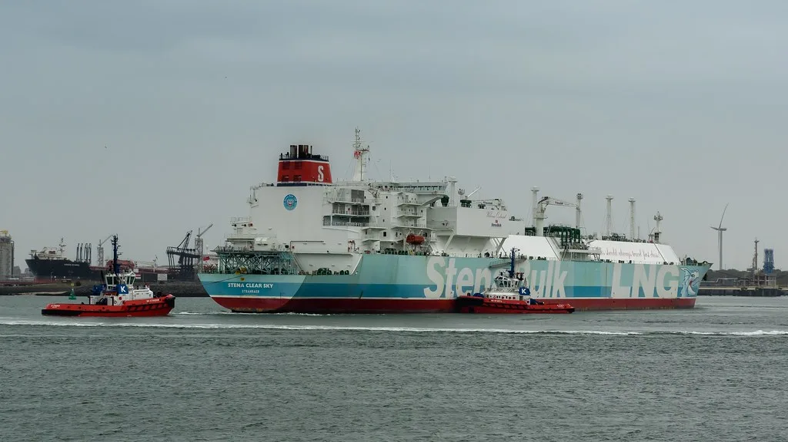

트럼프, 韓 2000억달러 대미투자에 원전 8기·알래스카 LNG 못박아
도널드 트럼프 미국 대통령이 현지시간 9월 30일, 한국이 미국에 투자하기로 한 2000억달러 전략투자 프로젝트의 구체적인 대상을 직접 발표했다. 트럼프 대통령이 지목한 사업은 미국 내 대형 원자력발전소 8기 건설, 텍사스 가스복합화력발전소 사업, 그리고 알래스카 액화천연가스(LNG) 개발 사업 세 가지다. 이번 발표는 지난해 경주에서 열린 한미 정상회담에서 합의된 3500억달러 규모 대미 투자 패키지 가운데 전략적 투자 부문 2000억달러에 해당하는 내용을 구체화한 것이다.
투자 규모를 사업별로 보면 원전 8기 건설에 약 1200억달러, 텍사스 가스복합화력발전 사업에 약 220억달러, 알래스카 LNG 사업에 500억달러가 넘는 자금이 투입될 것이라고 트럼프 대통령은 설명했다. 특히 원전과 알래스카 LNG 사업에 들어가는 금액을 합치면 전체 2000억달러 가운데 대부분을 차지하는 규모여서, 이번 발표가 사실상 투자 프로젝트의 윤곽을 결정짓는 성격을 띤다는 평가가 나온다.

그러나 한국 정부의 입장은 다소 결이 다르다. 한국 측이 1호 사업으로 공식 확정한 것은 텍사스 엔시날 지역의 223억달러 규모 가스발전소 사업뿐이며, 원전 8기 건설과 알래스카 LNG 사업은 여전히 추후 협의가 필요한 과제로 남아 있다는 설명이다. 알래스카 LNG 사업의 경우 아직 최종투자결정(FID) 단계에도 이르지 못한 상태로 알려져 있으며, 한국 측 자금 집행 역시 추가적인 사업성 실사와 검증 절차를 거쳐야 한다는 것이 정부 관계자들의 설명이다.
이 때문에 이번 발표를 둘러싸고 온도차 논란도 제기된다. 한미 공동 자료에는 원전과 알래스카 LNG 투자가 '검토' 대상으로 기술돼 있는 반면, 트럼프 대통령은 이를 이미 확정된 투자인 것처럼 단정적으로 발표했다는 지적이다. 일각에서는 이런 화법이 협상 과정에서 한국 측에 투자 이행을 압박하기 위한 전략적 메시지일 수 있다는 해석도 나온다.

알래스카 LNG 사업은 그간에도 사업성과 경제성을 둘러싼 논란이 꾸준히 제기돼 온 프로젝트다. 극지방이라는 입지 특성상 건설 비용과 운영 리스크가 크고, 완공까지 상당한 시일이 소요될 것으로 전망되는 만큼 한국 측이 실제 투자 결정을 내리기까지는 추가적인 검토 기간이 필요할 것이라는 관측이 지배적이다. 원전 8기 건설 역시 부지 선정과 인허가, 공급망 확보 등 선행 과제가 산적해 있어 당장 착공으로 이어지기는 어려울 것으로 보인다.
결국 이번 발표는 투자 프로젝트의 방향성을 미국 측이 선제적으로 제시한 것일 뿐, 실제 이행 단계로 넘어가기까지는 한미 양국 간 추가 협의와 검증 절차가 뒤따를 수밖에 없다는 분석이 많다. 향후 양국 실무 협상에서 원전과 알래스카 LNG 사업의 구체적인 투자 조건과 시기가 어떻게 조율되는지가 이번 2000억달러 프로젝트의 실질적 분수령이 될 전망이다.
국내 산업계에서는 이번 투자 프로젝트가 실제로 이행될 경우 국내 건설·중공업·에너지 기업들의 미국 시장 진출 기회로 이어질 수 있다는 기대와 함께, 대규모 자금이 해외로 유출되는 데 따른 국내 투자 여력 축소를 우려하는 목소리도 공존한다. 특히 원전 건설 사업의 경우 국내 원전 기자재 업체들의 수주 가능성이 거론되는 반면, 알래스카 LNG처럼 사업성 검증이 끝나지 않은 프로젝트에 거액이 투입되는 데 대해서는 신중한 접근이 필요하다는 지적도 나온다.